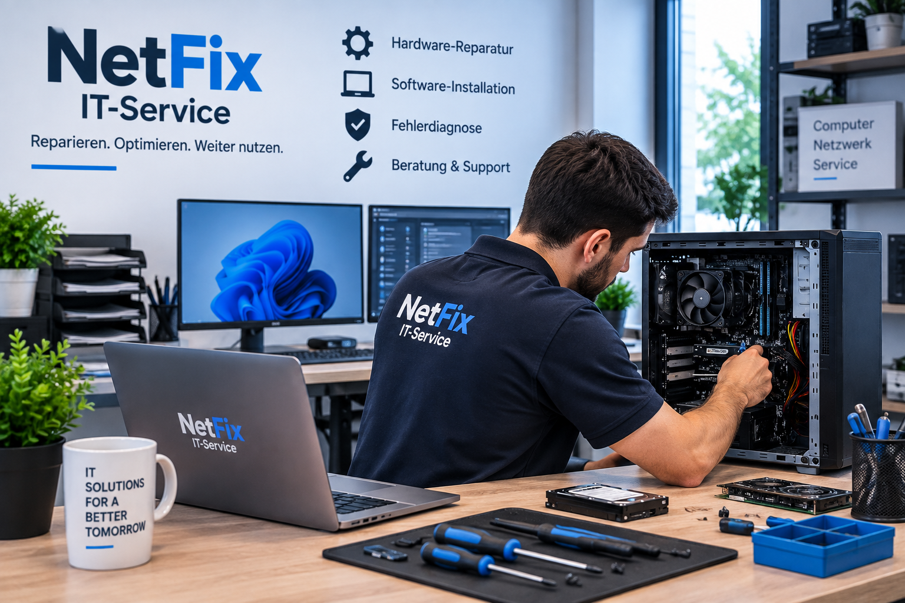

Schnelle Hilfe für Ihre Technik
Wir unterstützen Privatkunden und kleine Unternehmen bei Computerproblemen, Netzwerken und Datensicherung.
Kontakt aufnehmenÜber uns
NetFix IT-Service unterstützt Privatkunden und kleine Unternehmen bei Problemen mit Computern, Netzwerken und Datensicherung.
Unser Ziel ist es, technische Probleme schnell, zuverlässig und verständlich zu lösen.
Unsere Leistungen

Computerreparatur
Wir prüfen Computer und beheben Hardware- und Softwareprobleme.
Netzwerkservice
Wir helfen bei der Einrichtung und Fehlerbehebung von Netzwerken.
Datensicherung
Wir sichern wichtige Daten und beraten zu passenden Backup-Lösungen.
Virenentfernung
Wir überprüfen Systeme auf Schadsoftware und entfernen Viren.
Preisliste
| Dienstleistung | Beschreibung | Preis |
|---|---|---|
| Computerdiagnose | Überprüfung von Hard- und Software | 29 € |
| Virenentfernung | Prüfung und Entfernung von Schadsoftware | 49 € |
| Windows-Installation | Installation und Grundeinrichtung | 59 € |
| Netzwerkservice | Einrichtung oder Fehlerbehebung | ab 39 € |
So läuft eine Kundenanfrage ab
- Der Kunde nimmt Kontakt mit uns auf.
- Wir besprechen das technische Problem.
- Wir prüfen das Gerät oder das Netzwerk.
- Der Kunde erhält eine Lösung und einen Preis.
- Nach Zustimmung führen wir die Arbeiten durch.
Unsere Vorteile
- Schnelle Terminvereinbarung
- Faire und transparente Preise
- Unterstützung bei Hard- und Softwareproblemen
- Beratung für Privatkunden und kleine Unternehmen
Kontakt
Öffnungszeiten
Montag – Freitag: 09:00 – 18:00 Uhr
Samstag: 10:00 – 14:00 Uhr
Sonntag: geschlossen
Kontaktdaten
NetFix IT-Service
Musterstraße 10, 53111 Bonn
Telefon: 0228 1234567
E-Mail: info@netfix-it.de
E-Mail schreiben